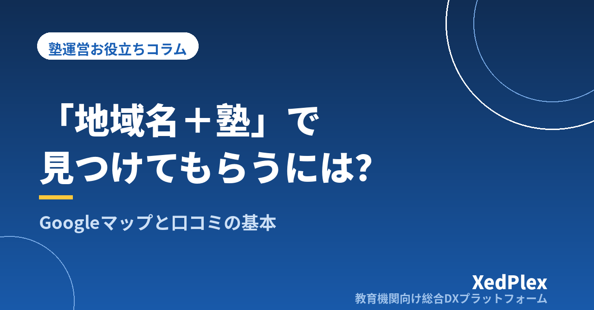

「地域名＋塾」で見つけてもらうには？｜個人塾のGoogleビジネスプロフィール整備と口コミの集め方・返信の基本

試しにスマホで「自分の町の名前＋塾」と検索してみたら、地図に並ぶのは大手チェーンと駅前の教室ばかりで、自塾は下のほうにも見当たらない。あるいは出てはくるものの、営業時間が空欄で、写真は一枚もなく、口コミは数年前の1件だけ──。個人塾・小規模塾の塾長から、こんな話をよく聞きます。
いま保護者が塾を探すとき、最初に見るのは地図に並んだ塾の一覧と、その下の口コミであることが増えています。そこで名前が出てこなければ、比較の土俵に上がる前に候補から外れてしまいます。この記事では、Googleビジネスプロフィール（Googleマップや検索結果に表示される店舗情報）について、最初に整える項目、ルールに沿った口コミの集め方、返信の型、塾長ひとりで続けられる運用を、個人塾の実務目線で整理します。
なぜ個人塾こそGoogleビジネスプロフィールを整えるべきか
Googleビジネスプロフィールは、Googleが無料で提供している店舗情報の登録・管理サービスです。オーナー確認を済ませると、地図や検索結果に表示される自塾の情報（営業時間・写真・説明文・口コミへの返信など）を自分で編集できるようになります。個人塾にとって相性が良い理由は3つあります。
- 費用がかからない：広告費をかけずに、地域で検索している保護者の目に触れる場所を持てます。
- 「通える範囲」の人にだけ見られる：地図検索は検索した人の位置や地域名を基準に結果が出るため、遠方の人に見られても意味がない塾の集客と相性が良いのです。
- 口コミが一次情報になる：ホームページの「合格実績」より、実際に通っている家庭の声のほうが、保護者は信用しやすいものです。
地図上の表示順はGoogleが決めるもので、確実に上位に出す方法はありません。Googleは「関連性・距離・知名度」を目安として示していますが、塾長ができるのは関連性（情報が正確で充実しているか）と知名度（口コミが積み上がっているか）を地道に整えることです。裏技を探すより、基本項目を埋めるところから始めましょう。
まず整える：プロフィールの基本8項目
オーナー確認が済んでいなければ、まずそこからです。確認方法（郵送・電話・動画など）はGoogleの案内に従ってください。確認が済んだら、次の8項目を順に埋めます。1〜2時間あれば一通り終わります。
| 項目 | 書き方のポイント | よくある抜け |
|---|---|---|
| 1. ビジネス名 | 看板どおりの正式名称のみ。「地域名 個別指導」などのキーワード追加は違反になり得ます。 | 宣伝文句の追加 |
| 2. カテゴリ | メインは「学習塾」。個別指導・英語教室など実態に合うものを追加。 | 不適切なカテゴリ |
| 3. 住所・地図ピン | ピンが建物の正しい位置にあるか確認。ビルなら階数も。 | ピンが隣の建物 |
| 4. 営業時間 | 「問い合わせに対応できる時間」を基準に。休講日・講習期は特別営業時間で登録。 | 空欄、講習期の未更新 |
| 5. 電話・ウェブサイト | つながる番号を1つ。ホームページがなければ問い合わせフォームやLINE公式アカウントのURLを。 | 個人携帯で出られない |
| 6. ビジネスの説明 | 「誰に・何を・どのように」を最初の3行に。対象学年、指導形態、自習室や通知の仕組みなど事実を書く。 | 理念だけで具体がない |
| 7. 写真 | 外観（入口が分かるもの）・教室内・自習スペースなど10枚程度。生徒が写る場合は保護者の同意を取り、顔が特定されない構図に。 | 外観がなく場所が不明 |
| 8. 属性・サービス | 「駐輪場」「オンライン授業」などの属性と、コース名をサービスとして登録。 | 未設定のまま |
説明文に迷ったら、「個人塾のホームページに載せるべき情報」で整理した「保護者が確認したい3つの疑問」と同じ考え方で書けば十分です。ホームページとプロフィールで名称・住所・電話番号・料金の表記がずれていないかも確認しておきましょう。
口コミを集める：やっていいこと・いけないこと
口コミは待っていても増えません。かといって、集め方を間違えると口コミが削除されたり、新規の投稿が一定期間受け付けられなくなったりすることがあります。まず「いけないこと」から押さえておきます。
- 割引・図書カード・ポイントなど、特典と引き換えに投稿を依頼する（抽選の参加条件にするのも同様）
- 「星5でお願いします」など、評価や内容を指定する
- 満足していそうな家庭だけを選んで依頼する（選別）
- 塾長・講師・家族など関係者が投稿する、複数アカウントで投稿する
- 教室の端末でその場で書かせる、書くまで帰さない
特典付きの依頼については、景品表示法上の問題を指摘する声もあります。判断に迷う場合は、Googleの最新のポリシーと消費者庁の資料を確認し、必要なら専門家に相談してください。
お願いするタイミングを決めておく
「いけないこと」を避けたうえで、大切なのはお願いするタイミングをあらかじめ決めておくことです。思いついたときに頼むと、気まずさが先に立って結局頼めません。塾には、保護者の満足が高まる節目がいくつかあります。
- 入塾後2〜3か月で、宿題や通塾のリズムが定着してきたとき（最初の面談の終わりなど）
- 定期テストや模試で、本人が手応えを感じた直後
- 保護者から「ありがとうございます」と言われた、その返事の中で
- 受験が終わり、結果の報告と今後の話をするとき
- 卒塾・退塾の手続きのとき（円満な場合）
この「節目」は、紹介をお願いするタイミングとほぼ重なります。どちらも「満足している家庭に、その気持ちを外に向けてもらう」行為だからです。家庭ごとにどちらかを頼めばよく、両方を一度に頼む必要はありません。
依頼の手段と文例
依頼は個別に、任意で、評価を指定せずが原則です。口コミ投稿ページへのリンク（管理画面から取得できます）をQRコードにして名刺サイズのカードに印刷しておくと、面談の終わりに渡すだけで済みます。保護者向けの連絡手段からリンクを送る場合も、一斉配信より面談後に個別に送るほうが投稿につながりやすいものです。
「もしよろしければ、○○さんが通ってみて感じたことを、Googleの口コミに書いていただけると、これから塾を探すご家庭の参考になります。良い点も、こうしてほしいという点も、率直に書いていただいて構いません。こちらがそのページのQRコードです。」
「本日はお時間をいただきありがとうございました。もしご負担でなければ、当塾のGoogle口コミに率直なご感想をお寄せください。任意ですので、書かれない場合もまったく問題ありません。→（リンク）」
誰にいつ頼んだかは、生徒ごとの記録に一行残しておきましょう。同じ家庭に何度も頼んでしまうのを防げますし、次の面談で「先日はありがとうございました」と一言添えられます。
口コミへの返信：評価別の型と文例
口コミは返信までがセットです。返信を読むのは投稿者だけでなく、これから塾を探す保護者です。「この塾は、うちの子のことも丁寧に見てくれそうか」という目で読まれていると思って書きます。原則は、良い評価にも厳しい評価にも同じ調子で、できれば1週間以内に返すことです。
良い評価への返信
お礼だけの定型文を回すと、かえって事務的に見えます。3文で十分なので、投稿の内容に触れた一文を必ず入れます。
注意点として、返信で生徒の氏名・学校名・成績など、投稿者が書いていない個人情報には触れないようにします。
厳しい評価への返信
低い評価がつくと動揺しますが、感情的に反論した返信は、投稿そのものより読み手の印象を悪くします。型は「お礼→受け止め→今後の対応→窓口の案内」です。
公開の場で詳細な事情を説明しようとしないことが大切です。個別のやりとりは直接の窓口に移し、返信は「受け止めた」「対応を変えた」という事実だけを簡潔に書きます。苦情対応そのものは、「塾への保護者クレーム対応の手順」の初動と記録の型がそのまま使えます。
事実と異なる投稿・心当たりのない投稿
利用した覚えのない人からの投稿や明らかに事実と異なる内容は、ポリシー違反として報告する手段があります。ただし削除はGoogle側の判断で、「低評価だから」という理由では消えません。報告と並行して、閲覧者向けに「当塾の記録では該当するお問い合わせが確認できておりません。事実確認をしたく、教室までご連絡ください」と冷静な返信を残しておくのが現実的です。
塾長ひとりで続ける運用：月1回15分のチェック
プロフィールは更新が止まると情報が古くなり、保護者の信頼も下がります。とはいえ毎日触る必要はありません。月に1回、15分と決めて、次の5つを回します。
| チェック項目 | やること |
|---|---|
| 口コミの返信 | 未返信があれば返す。通知メールの見落としがないか確認。 |
| 営業時間 | 翌月の休講日・講習期間を特別営業時間に登録。 |
| 写真の追加 | 掲示物や講習の様子など1〜2枚。同意のない生徒の顔が写っていないか確認。 |
| 投稿（最新情報） | 体験授業の受付、講習の案内など、いま伝えたいことを1件。 |
| Q&Aと情報の確認 | 第三者からの質問や情報の修正提案がないか確認し、必要なら回答・修正。 |
この15分は、面談準備や月末の請求業務と同じく、月の決まった日に事務作業として組み込んでしまうのがコツです。「時間があるときにやる」では続きません。
忘れがちなのが、見つけてもらった後の導線です。プロフィールを見た保護者は、電話・ホームページ・問い合わせフォームのいずれかに進みます。電話に出られない時間帯が多い塾なら、フォームからの問い合わせに早く返せる体制があるかで、せっかくの接点が生きるかどうかが決まります。その先の流れは「体験授業から入塾につながらない塾の共通点」もあわせてご覧ください。
まとめ
「地域名＋塾」で見つけてもらうために特別な技術は要りません。基本8項目を正確に埋め、節目のタイミングで個別に・任意で・評価を指定せずに口コミをお願いし、どんな評価にも1週間以内に同じ調子で返信し、月1回15分の更新を続ける。この4つの積み重ねが、個人塾にとってもっとも確実な方法です。まずは今日、スマホで「自分の町の名前＋塾」と検索し、自塾のプロフィールを保護者の目で眺めて、空欄を1つ埋めるところから始めてみてください。
この記事を書いた運営より
私たちは、個人経営・小規模の学習塾向けに、生徒管理・QRコードでの入退室記録・月次請求・保護者へのLINE/メール通知・AIによる学習支援までをひとつにまとめた教育機関向け総合DXプラットフォーム「XedPlex（ゼドプレックス）」を開発・提供しています。初期費用は0円、料金は生徒1名あたり月額300円（税込）から。生徒50名の塾なら月15,000円（税込）です。全国8つの教室で導入されており、導入塾には紹介ホームページの無料作成も行っています。機能の詳細説明はこちら。
XedPlexの詳細を見る